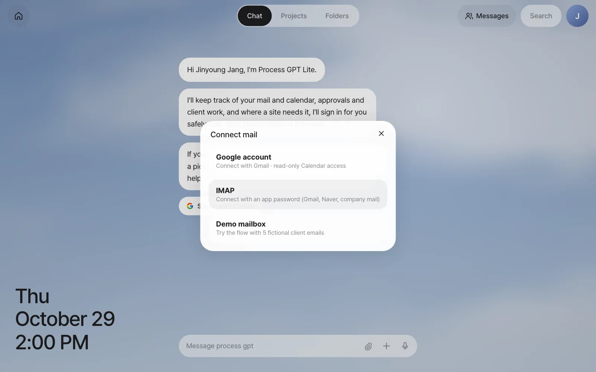
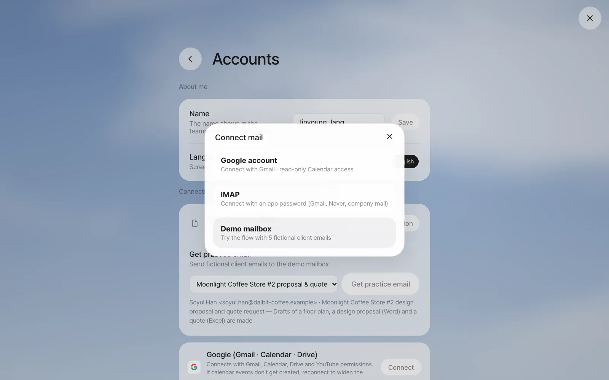
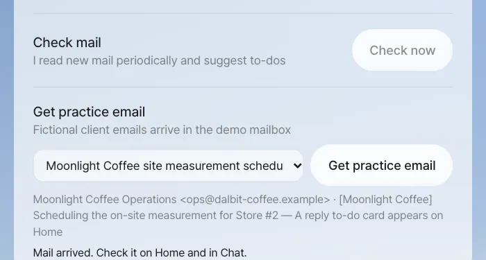
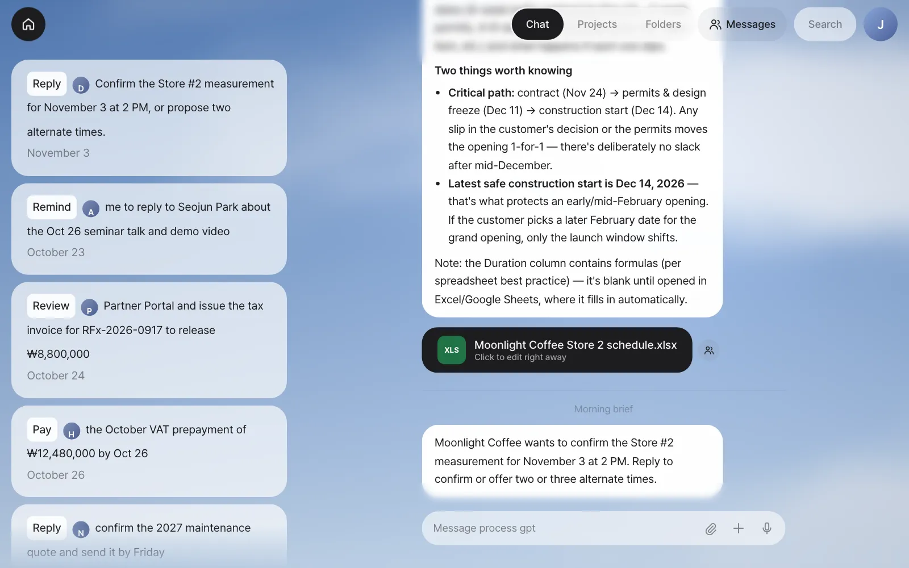
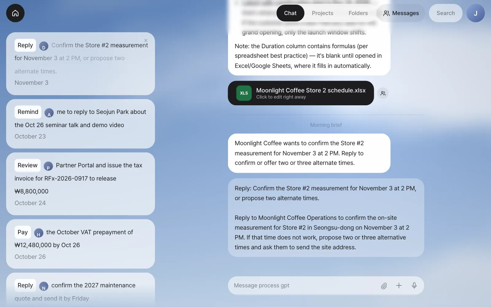
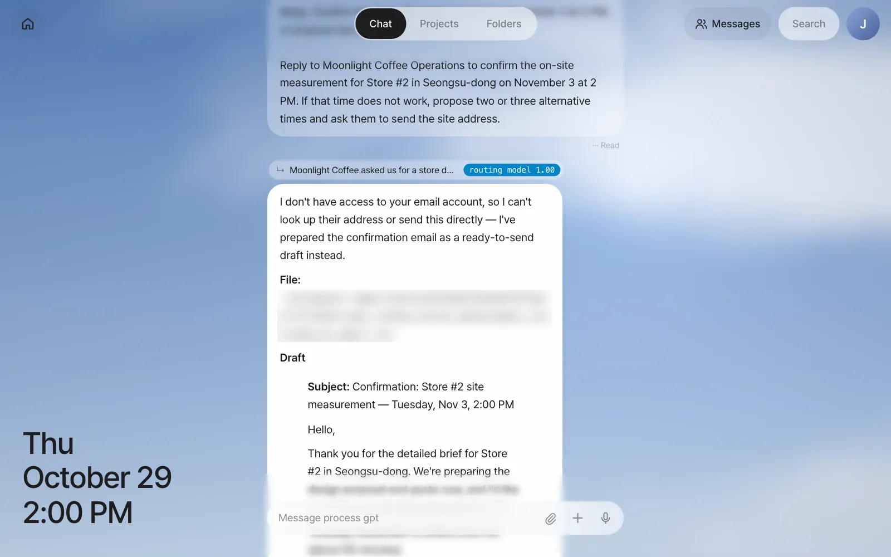

Once your mail is connected, the assistant reads new mail every few minutes, puts a card on Home when there's something to handle, and tells you about the important things in a brief. You'll follow along as Moonlight Coffee's email about a site measurement meeting becomes a card, and clicking that card gets you a reply draft.
Why hand over your mail#
Up to Chapter 4, you started every conversation with the assistant. This time, the assistant reads your mail first and comes to you with to-dos. Of the mail you get each day, only a few really need your hands. The trouble is that finding those few, working out what to do, and writing replies all take time. The mail assistant does these three things for you.
| What the assistant does | What you see |
|---|---|
| Reads new mail regularly | Nothing for you to do |
| Picks out mail that needs action | To-do cards on Home (Reply, Pay, Book… + one line + due date) |
| Sums up what matters now | A brief in Chat (Morning, Afternoon or Evening brief) |
| Starts the work when you click a card | A reply draft and points to check, in Chat |
| Makes drafts first when an email asks for documents | File cards and a Review card on Home (Chapter 9) |
It skips ads and newsletters. That's also why, of the five emails in the demo mailbox in Chapter 1, only the newsletter didn't get a card.
Three ways to connect#
In the first-run guide in Chapter 1, clicking Sign in with Google (or Connect mail) opened a window where you chose how to connect.

| Method | What you need | What it does |
|---|---|---|
| Google account | An administrator must have set up Google connection on the server (Chapter 1) | Reads Gmail, checks and adds calendar events, and can create reply drafts in Gmail. The access permission (token) Google issues is kept encrypted in the Vault |
| IMAP | The mail server address (for example, imap.gmail.com), your email address and an app password |
Works anywhere that opens IMAP, such as Gmail, Naver or company mail. The password is stored encrypted only in the Vault. Read only |
| Demo mailbox | Nothing | A practice mailbox with five fictional client emails. This tutorial uses it |
You can change the connection later. In Settings › Accounts › Connections, click Change connection on the mail row and the same window opens again. Choose Google account, IMAP or Demo mailbox and you switch to that mailbox. Use this when you move from practicing with the demo mailbox to your real mail. You can also connect a Google account with Connect on the Google card lower on the same screen, and once it's connected, mail checking switches to Gmail too.

How the assistant reads your mail#
- It checks for new mail every 5 minutes. If you don't want to wait, click Check now under Settings › System › Check mail.
- It looks only at unread mail from the last two days. For Gmail, it leaves out the Promotions and Social tabs and looks at up to 20 emails.
- If there's no new mail, it doesn't call the AI model. If there is, it shows those emails to the model in one go and decides on cards, the brief and drafts.
- What goes to the model is each email's sender, subject, date and the start of the body (800 characters). Attachments aren't sent.
Try it 1 — receive the Moonlight Coffee email#
A follow-up email arrives on the Moonlight Coffee job you organized in Chapter 3. Before you write the proposal, they're asking to measure the site.
| Item | Content |
|---|---|
| From | Moonlight Coffee Operations <ops@dalbit-coffee.example> |
| Subject | [Moonlight Coffee] Scheduling the on-site measurement for Store #2 |
| Body | Hello, this is the Moonlight Coffee operations team, writing about Store #2 in Seongsu-dong. Would an on-site measurement meeting at the store on November 3 at 2 PM work for you? If that time doesn't work, please suggest two or three times that do. We'll send the site address separately once you reply. Thank you. |
If you connected Gmail or IMAP, just send yourself an email with this content. If you're using the demo mailbox, you receive this email from the screen.
- Open Settings › System. Get practice email is at the very bottom (the same section is also under Connections in Settings › Accounts).
- Choose Moonlight Coffee site measurement scheduling from the list. Below it you see the sender and subject, and what happens ("A reply to-do card appears on Home").
- Click Get practice email. You're done when "Mail arrived. Check it on Home and in Chat." appears.

The assistant reads practice email right away, just like real mail. Besides this one, the list has "Moonlight Coffee Store #2 proposal & quote request," used in Chapter 9, "Hanbit Events year-end party refreshments cost sheet," which asks for an Excel cost sheet, and "Northwind tax invoice request." This section appears only with the demo mailbox, so on an account connected to real mail, practice by sending mail to your own address.
About a minute after the email arrives, a card appears at the top of Home, and a brief (a Morning, Afternoon or Evening brief, depending on the time) is added to Chat.

Check: At the top of Home there's a Moonlight Coffee card starting with Reply (in our run, "Confirm the Store #2 measurement for November 3 at 2 PM, or propose two alternate times."), with the due date November 3 under it, and Chat has a brief ("Moonlight Coffee wants to confirm the Store #2 measurement for November 3 at 2 PM…"). The verb may come up as Book instead of Reply.
This email doesn't ask for documents, so no drafts are made. You'll see what changes when an email asks for a proposal and a quote in Chapter 9.
Try it 2 — start work from a card#
Click a card and the assistant starts that work right away. The card's text shimmers while the work runs, and in Chat, the card's sentence goes up as if it were your message, together with the instruction the assistant wrote down when it made the card. You can see exactly what you asked for, so if it isn't what you meant, correct it right after.

In our run, the reply draft came as a speech bubble after about a minute.

The draft from our run had these parts.
- A subject, "Confirmation: Store #2 site measurement — Tuesday, Nov 3, 2:00 PM," and a body — confirming November 3 at 2 PM (about 90 minutes), and what to have ready for the visit (access to the ceiling area and the electrical panel, to check the roaster's ventilation and power)
- Two other times, in case that time doesn't work (Wednesday, November 4, 10:00 AM and Thursday, November 5, 3:00 PM), and a request for the exact site address
- A note on the alternates — both stay in the first week so the November 6 deadline is protected — and that Gmail isn't connected, so you send the draft yourself once you have the recipient's address (it was also saved as a text file)
- A closing line promising the proposal and quote by Friday, November 6
Check: The line above the answer points to the Moonlight Coffee conversation, and the reply draft includes November 3 at 2 PM and alternative times. A card whose work is done disappears from Home.
Go one step further by connecting Google
With a Google account connected, the assistant can check your calendar to see whether that time is free, and create a reply draft in Gmail. Sending the email is still up to you, in Gmail. You decide in your instructions how far the assistant goes with the work it takes on. For example, after clicking the card, follow up with "Put the Nov 3, 2 PM site measurement in the calendar too."
Working with cards#
| What you want | How |
|---|---|
| Have the assistant do a card's work | Click the card |
| Clear a card you don't need | The × that appears at the card's top right when you hover over it |
| Get notified without cards | Read only the briefs in Chat and clear cards with × |
| Leave your own to-do as a card | Say something in Chat like Check the Moonlight Coffee quote unit prices by Friday. Leave it on Home as a to-do. The assistant replies something like "I've added a to-do on Home to review the Moonlight Coffee quote unit prices, due Friday, October 30" and creates a card on Home (in our run, Review, due: that Friday) |
Next#
Your mail was somewhere the assistant could read right away. In the next chapter, you hand work on websites that need a login to the browser agent, and see how to keep passwords and card numbers safe in the Vault (Chapter 6).
Check questions
- Of the five emails in the demo mailbox, the WeeklyTech newsletter ("This week's AI news roundup") didn't get a card on Home. Why? If you connected Gmail or IMAP, send an ad email to your own address and check.
- Write down one thing the mail assistant sends to the AI model and one thing it doesn't.
- If Moonlight Coffee's next email only said "Please send us a proposal and a quote by November 6," what would be different from this chapter?
Answer
- Because the assistant decides ads and newsletters aren't work to handle and skips them. It reads the mail but doesn't make cards. When we added an ad email in our run, it read one new email and made 0 to-do cards. If a card does appear, just clear it with ×.
- Sent: each new email's sender, subject, date and the start of the body (800 characters). Not sent: attachments, mail you've already read, IMAP passwords and Google tokens (they're only in the Vault).
- It's an email asking for documents, so the assistant starts making drafts of the proposal and quote first without asking (plus a floor plan if it's a design proposal), and a Review draft review card appears on Home (Chapter 9).